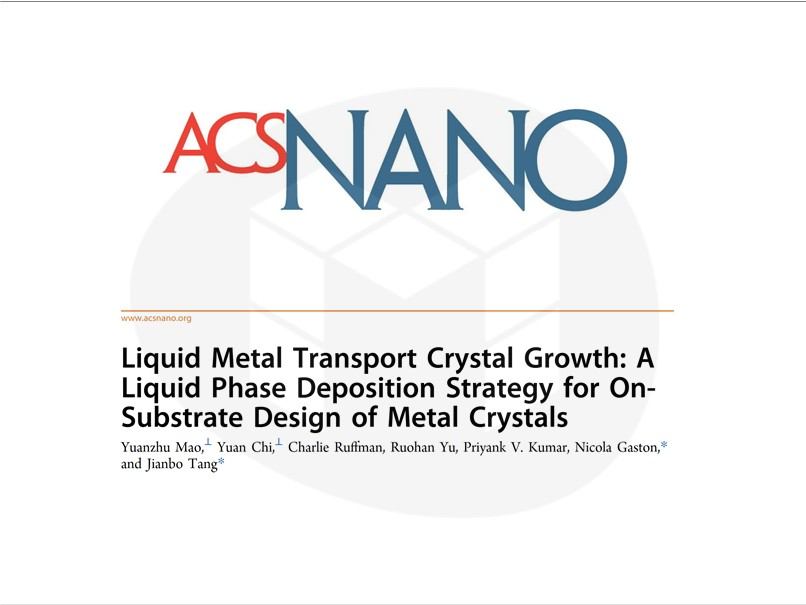
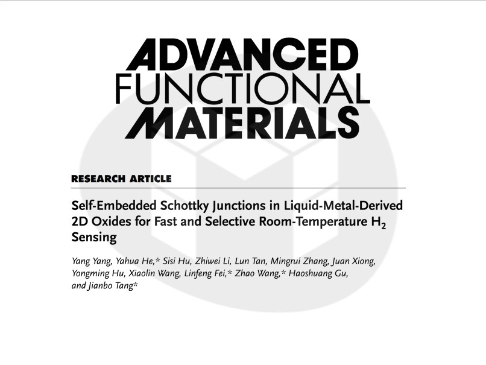
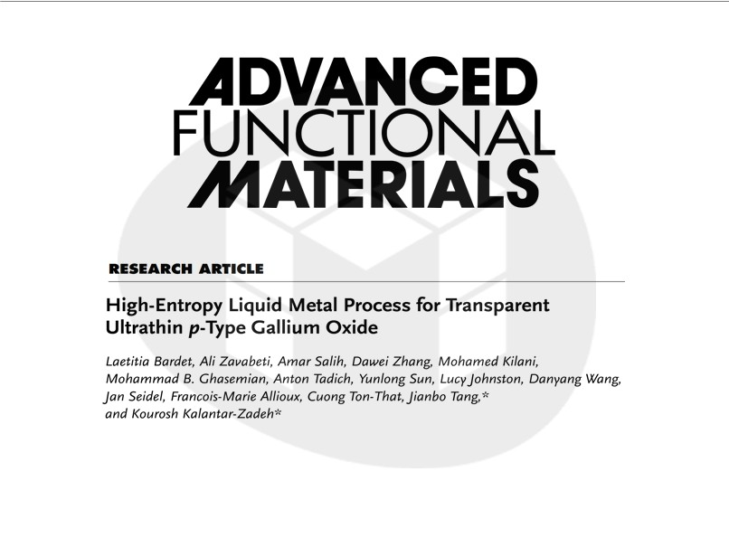
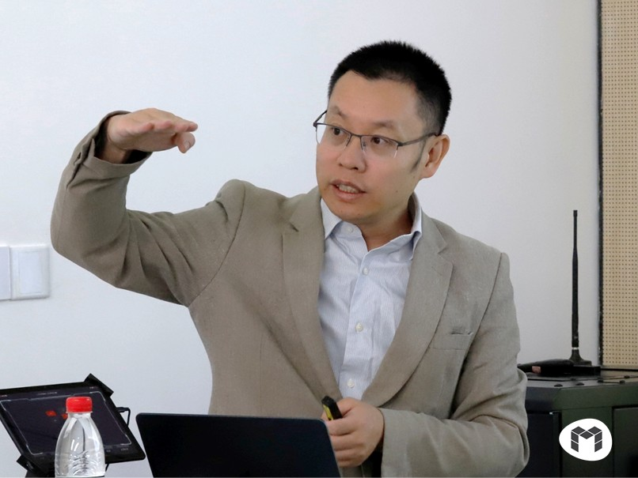
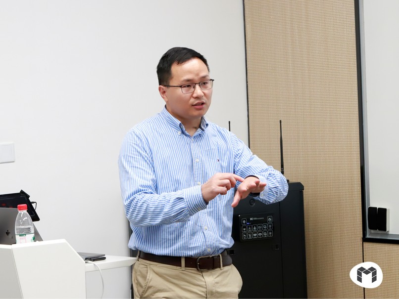
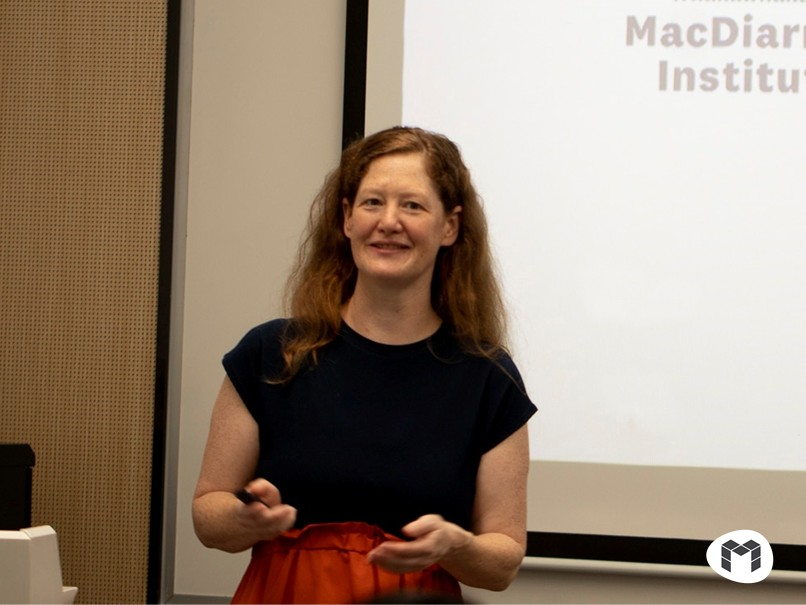

-

Publication
May 21, 2025
Yuanzhu Mao et al | A new way of growing substrate-supported crystals from a liquid metal solvent
Liquid phase deposition is widely employed for growing substrate-supported thin films and structures...
Continue Reading
-

Publication
Apr 04, 2025
Yang Yang et al | Collaborative project on 2D indium oxide with self-embedded Schottky junctions for room-temperature hydrogen sensing
Semiconductor-based hydrogen sensors provide cost-efficient solutions for safety and a circular...
Continue Reading
-

Publication
Mar 12, 2025
Laetitia Bardet et al | Liquid metal solutions for p-type 2D gallium oxide
The naturally self-limiting oxide formed on the surface of liquid metals can be exfoliated and...
Continue Reading
-
 Publication
PublicationFeb 24, 2025
Lucy Johnston | Biosensing with liquid metal-synthesized mesoporous noble metal thin films
Nanoporous thin films of noble metals are known for their exceptional durability, biocompatibility...
Continue Reading
-

Event
Jan 13, 2025
Dewei Chu | Bio-inspired nanoionic materials for wearable devices
Dewei Chu a Full Professor and ARC Mid-career Industry Fellow in the School of Materials Science...
Continue Reading
-

Event
Jan 06, 2025
Shuhua Peng | Soft conductive nanocomposites for wearables
Shuhua Peng is a Senior Lecturer and Australian Research Council (ARC) Future Fellow in the School of...
Continue Reading
-
 Event
EventJan 06, 2025
Shuying Wu | Polymer Nanocomposites for High-performance Wearable Sensors and Composite Structures
Shuying Wu is a Senior Lecturer in the School of Aerospace, Mechanical and Mechatronic Eng...
Continue Reading
-
Event
Jan 06, 2025
Junma Tang | Dynamic catalysis of liquid metal
Junma Tang is a Professor at the School of Chemistry, Xi'an Jiaotong University and a recipient of...
Continue Reading
-

Event
Oct 18, 2024
Nicola Gaston | Liquid metals as dynamic systems for atomically-precise control
Nicola Gaston is a Professor at the University of Auckland and Co-Director of MacDiarmid Institute for...
Continue Reading